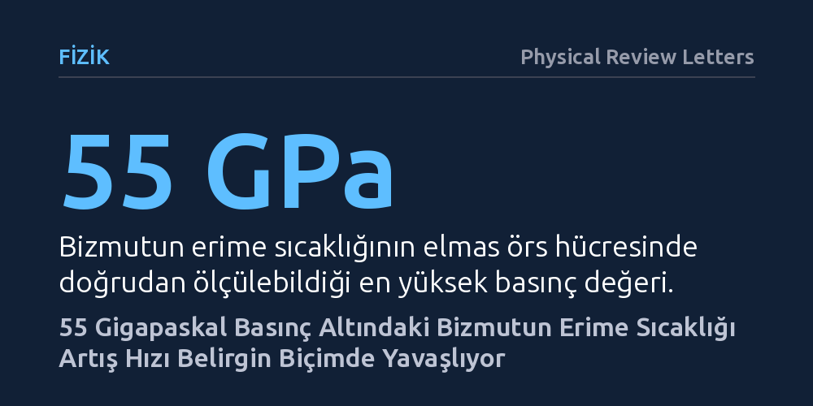

FIZIK · Physical Review Letters · 2026-10-13
Araştırmacılar, elmas örs hücresi ve senkrotron görüntüleme teknikleriyle elementel bizmutun 55 gigapaskal basınca kadar olan erime sıcaklığını doğrudan ölçtü. Elde edilen veriler, basınç arttıkça erime eğrisi eğiminin belirgin biçimde azaldığını ve sıvı yapısındaki değişimin entropiyi artırdığını gösterdi.
Şok deneylerindeki erime davranışının gecikmeli kinetik etkilerden değil sıvının atomik yapısındaki değişimden kaynaklandığını göstererek teorik faz modellerinin güncellenmesi gerektiğini ortaya koyuyor.

Gündelik hayatımızda maddelerin erime sıcaklıklarını sabit kabul etmeye alışkınız; örneğin buz normal atmosfer basıncında sıfır derecede erir. Ancak basıncı olağanüstü seviyelere çıkardığınızda, atomların birbirine yaklaşma biçimi ve aralarındaki bağlar kökten değişir. Periyodik tablonun en ağır kararlı elementlerinden biri olan bizmut, karmaşık kristal yapıları ve basınca verdiği sıra dışı tepkiler nedeniyle fizikçiler için uzun süredir bir model malzeme konumundadır. Fakat bizmutun aşırı sıkıştırıldığında hangi sıcaklıkta eridiği sorusu, laboratuvarlarda onlarca yıldır tam bir uzlaşıya varılamayan tartışmalı bir bilmece olarak kaldı.
Bu sorunun net bir cevaba kavuşması yalnızca bizmutun kendisi için değil, genel olarak yoğun madde fiziği ve gezegen içi koşulların modellenmesi açısından da kritik önem taşır. Yüksek basınç altında malzemelerin nasıl davrandığını anlamak, hem şok dalgası deneylerinin doğru yorumlanmasını sağlar hem de teorik faz diyagramlarının güvenilirliğini sınar. Şimdiye kadar yapılan dinamik şok deneyleri ile statik sıkıştırma deneyleri arasındaki uyumsuzluklar, erimenin bir zamanlama ve gecikme meselesi mi yoksa maddenin henüz keşfedilmemiş yapısal bir özelliği mi olduğu şüphesini doğuruyordu.
Araştırma ekibi, bizmutun erime sınırını netleştirmek amacıyla lazerle ısıtılan elmas örs hücresi teknolojisine başvurdu. Bu düzenekte, dünyanın en sert maddesi olan iki elmasın mikroskobik uçları arasına yerleştirilen bizmut numunesi, 55 gigapaskala (deniz seviyesindeki atmosfer basıncının yarım milyon katından fazlasına) kadar sıkıştırıldı. Eş zamanlı olarak numune kızılötesi lazerlerle binlerce dereceye kadar ısıtıldı. Ancak böylesi küçük ve uç koşullarda bir katının sıvıya dönüştüğü anı standart optik yöntemlerle ayırt etmek son derece zordur.
Bu zorluğu aşmak için ekip, yüksek enerjili senkrotron X-ışınlarını kullanarak faz kontrast görüntüleme tekniğini devreye soktu. Geleneksel yöntemler yalnızca malzemenin X-ışınını ne kadar soğurduğuna bakarken, faz kontrast tekniği X-ışını dalgalarının fazındaki küçük kaymaları yakalayarak katı ve sıvı fazlar arasındaki sınır çizgisini olağanüstü bir netlikle görünür kıldı. Bu görüntüleme, radyometrik sıcaklık ölçümleri ve kristal kafes yapısını doğrulayan X-ışını kırınımı ile eş zamanlı yürütülerek erime sıcaklığı doğrudan kaydedildi.
Deney sonuçları, bizmutun Bi-V olarak adlandırılan yüksek basınç fazında şaşırtıcı bir eğilim ortaya koydu. Düşük basınçlarda basınç arttıkça bizmutun erime sıcaklığı dik bir ivmeyle tırmanırken, basınç yükseldikçe bu erime eğrisinin eğiminde belirgin bir yataylaşma ve azalma gözlendi. Yani basınç arttıkça erime sıcaklığının artış hızı beklenenden çok daha belirgin biçimde yavaşlıyordu.
Araştırmacılar bu davranışın ardındaki termodinamik mekanizmayı aydınlattı. İlk aşamadaki dik yükseliş, görece soğuk sıvının katı yapıya yakın bir atomik düzeni ve koordinasyonu korumasından, yani erime sırasındaki düzensizlik (konfigürasyonel entropi) değişiminin düşük kalmasından kaynaklanıyordu. Ancak basınç ve sıcaklık daha da yükseldiğinde, sıvı bizmutun atomik yapısında köklü bir değişim yaşanıyor; sıvının entropisi hızla artarak erime eğrisinin eğimini aşağıya çekiyordu.
Elde edilen bu doğrudan bulgular, yüksek basınç fiziğinde yıllardır süregelen önemli bir tartışmayı sonlandırdı. Şok sıkıştırma deneylerinde gözlemlenen erime verileri ile statik deneyler arasındaki tutarsızlıkların, iddia edildiği gibi gecikmeli kinetik etkilerden kaynaklanmadığı kesinleşti. Katı-sıvı arayüzünün doğrudan görüntülenmesi, sistemin termodinamik dengeye çok hızlı ulaştığını ve erimenin içsel faz davranışını yansıttığını kanıtladı.
Bu sonuç, mevcut teorik faz diyagramlarının ve bilgisayar simülasyonlarının yetersiz kaldığını ve acilen güncellenmesi gerektiğini gösteriyor. Basınç altındaki sıvı metallerin yalnızca homojen bir akışkan gibi davranmadığı, basınçla birlikte karmaşık yapısal dönüşümler geçirdiği artık hesaba katılmak zorunda. Bu çalışma, aşırı koşullardaki diğer ağır metallerin ve gezegen çekirdeklerini oluşturan maddelerin davranışını yeniden değerlendirmek için sağlam bir referans noktası sunuyor.